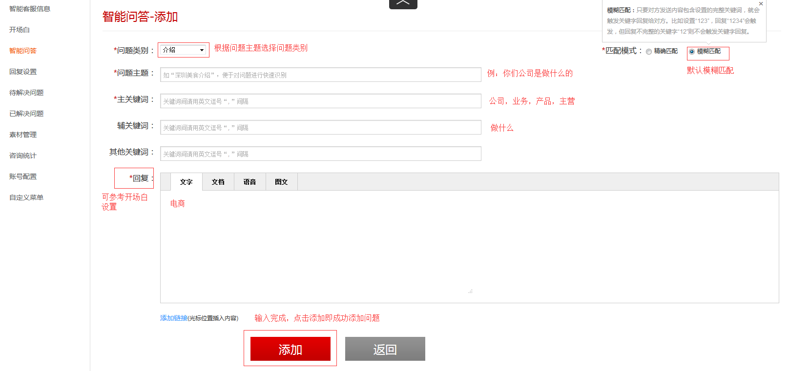
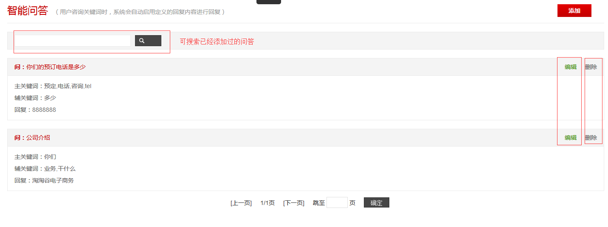
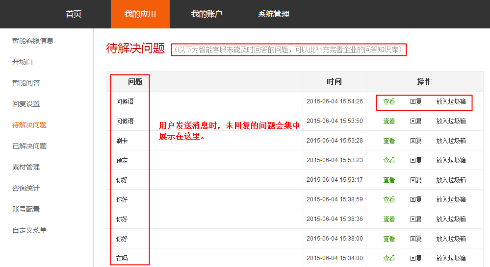
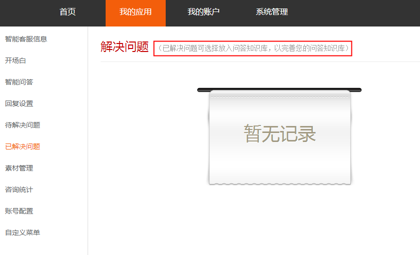

1、智能问答有什么作用
当用户咨询关键词时，系统会自动启用定义的回复内容进行回复
2、如何添加问答
进入【智能问答】页面后，点击页面右上角的添加按钮，进入问答设置页面，带*的为必填项，问答匹配模式默认为模糊匹配，详细设置如下图所示：

3、修改、搜索、删除问答
进入【智能问答】页面后，提供了修改、删除、搜索已经添加过的问答功能，如下图所示：

4、待解决问题
所有智能客服未能及时回答的问题都会记录在此页面中，方便客服进行"查看"、"回复"、"放入垃圾箱"等操作。如下图所示：

5、已解决问题
显示的是"待解决问题"中，已经处理过的问题汇总。如下图所示：
